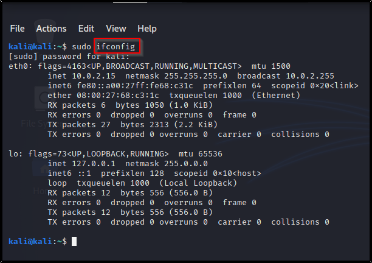

MAC Address Changer.
MAC Address, stands for Media Access Control. It's a permanent and physical adress assigned to networks interfaces by their manufacturers., so there are no two (2) devices that have the same MAC address. MAC addresses re used to identify and transfer data between devices
The IP Address is used to identify computers and allows computers communicate with one another on the internet.
We want to change our MAC address to - increase our anonymity
- impersonate other devices
Here's how we would manually change our MAC address. First we can use the command 'ifconfig', to list the interfaces on our computer.

eth0 is created by virtual box, so it thinks it's connected to a wired ethernet network. lo, is a virtual interface created by linux. You might have wlan0 if you have a network adapter plugged in, we'll talk about that as we go along and carry out our attacks.
Other than the interfaces, the ifconfig command also lists information about the interfaces, the IP, netmask, broadcast and MAC for each interface. Your MAC address is the characters attached to the ether.
Now, to change the MAC address, you need to specify which interface address you want to change. For instance if it's the virtual box, it'll be eth0 and wlan0 for your network adapter.
NB: Until i specify otherwise, we'll be using the eth0 network, 'cause everyone would have taht but not everyone would have a network aapter.
Here's the commands to change the Mac address:

This disables the interface.
If you don't get any errors, it means the command ran successfully.If you got an error, its probably because of your lack of root privilege, that's why I have sudo before mycommand. You can just use the command 'sudo -i' to get root privileges in that terminal.

Once the interface is down, you have to specify what you want to change, which is the MAC address (ether) and then type in the new MAC. Make sure it's 12 characters, you split it using the colon (:). Hit enter and if you get no errors, it worked.

Now we need to enable the interface, after disabling it with the down command. Yes, the up command enables it and your entire command should look like this:

Now, lets see if my MAC address actualy changed, by running ifconfig again.

I showed you how to change it manually so you understand what a MAC address is, how to change it and when we build the program, it won't look strange to you.